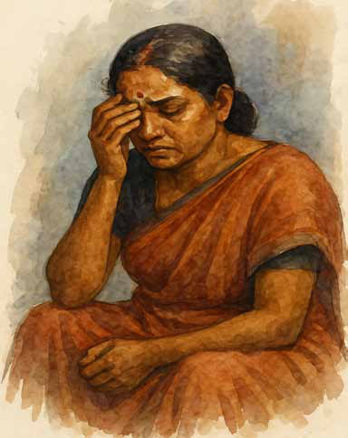
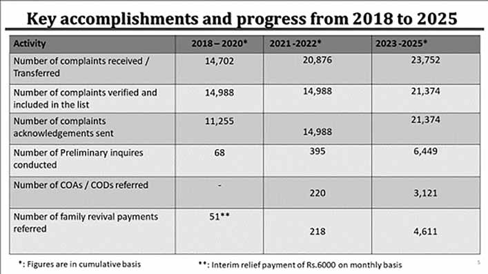
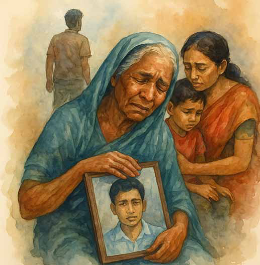
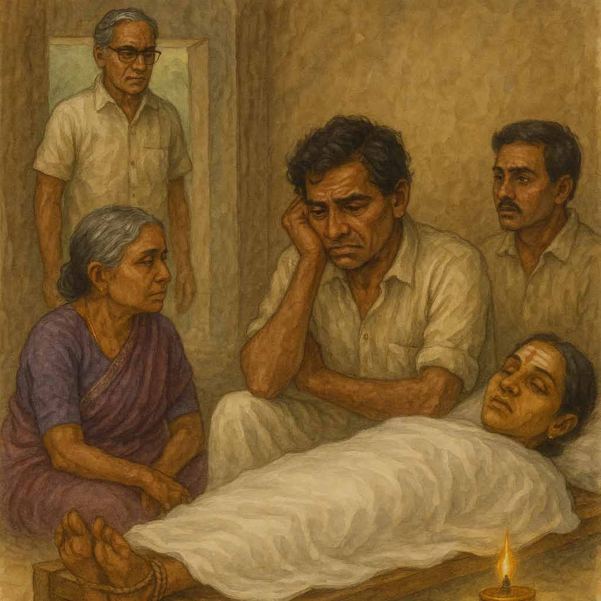
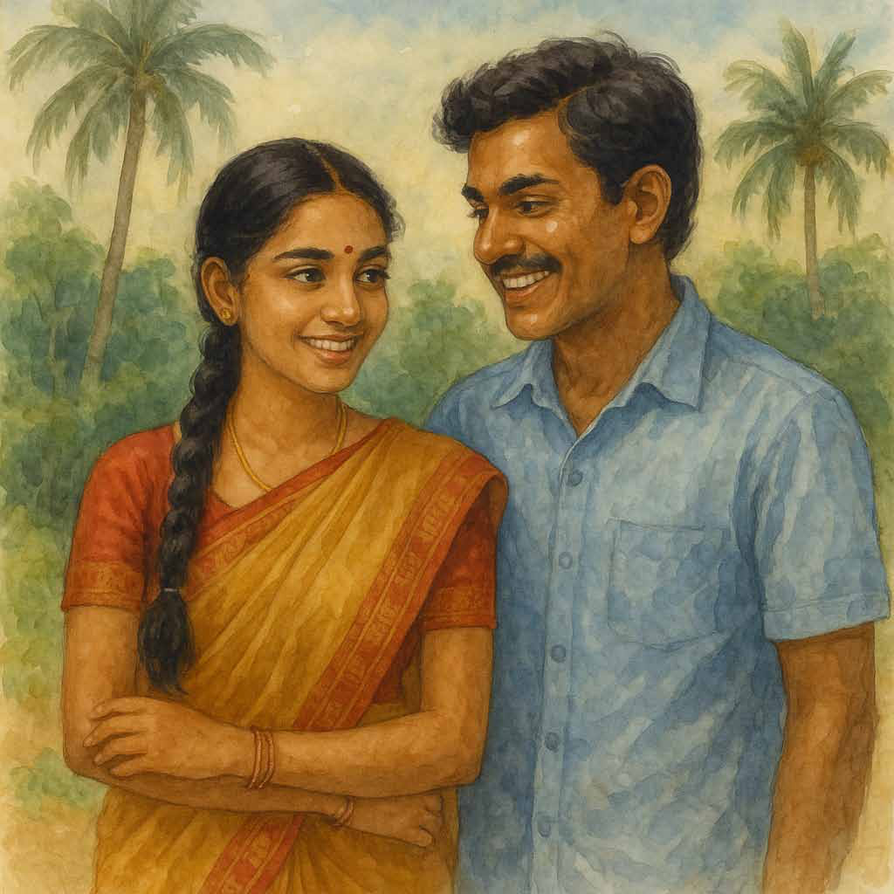

The toll of the missing: narratives of impunity, homicides and grief
The toll of the missing: narratives of impunity, homicides and grief
Jaffna Monitor hellojaffnamonitor@gmail.com 80 The toll of the missing: narratives of impunity, homicides and grief P eople becoming unaccounted for as a direct result of, or in connection with armed conflicts and other situations of violence is unfortunately, a common phenomenon throughout the world. The continuous emotional struggle endured by families of missing persons is an incomparable suffering. Absence of credible answers on the fate and whereabouts of their missing relatives drives the families to search relentlessly for meaning and for: knowledge of the exact BY: Jeevan Thiagarajah Former Governor Northern Province/ Former Member Commissioner Election Commission. circumstances of the disappearance; Families face the dual challenge of carrying on with their daily lives and, at the same time, dealing with the absence of their loved one. Moreover, the uncertainty over their relative’s fate leaves them perpetually torn between hope and despair. The 2011 report of the Lessons Learnt and Reconciliation Commission (LLRC) in Sri Lanka recommended that “a comprehensive approach Guest Column


Jaffna Monitor hellojaffnamonitor@gmail.com 81 to address the issue of missing persons should be found as a matter of urgency as it would otherwise present a serious obstacle to any inclusive and long-term process of reconciliation”. Adopting all feasible measures to account for persons reported missing as a result of armed conflict, and providing their family members with all available information thereon, is a legal obligation imposed on states by International Humanitarian Law (IHL). Families of missing persons constitute a sub-group of victims of armed conflict, and as a general rule, some of their needs are shared by some or all other victims. Nonetheless, families of missing persons face a specific reality of having to wait for an answer about the fate of their missing relative(s), and in light of that develop specific needs. Therefore, it is essential to assess the needs of missing persons’ families before embarking upon any action in their or their missing relatives’ favour.


Jaffna Monitor hellojaffnamonitor@gmail.com 82 o 2,521 families referred to Registrar General to obtain Certificates of Absence. o 428 families referred to Registrar General to obtain Certificates of Death. o 3,752 families supported with family revival payments. (Annexure 03) o 18 missing people were located and reported to the relevant authorities. o 1,280 complaints referred to relevant agencies for further investigations. - Complaints regarding missing and disappeared persons received directly by the OMP’s Head Office (2018-2023) NO of files 1,377 - Complaints regarding missing and disappeared persons received directly by the four Regional Offices of the OMP (2018-2023) 1,354 - Reports regarding missing and disappeared persons received from MNIR 14,702 - The lists of armed forces personnel who went missing in Action, forwarded by Sri Lanka Army 3257 - The lists of armed forces personnel who went missing in Action, forwarded by Sri Lanka Navy 452 - The lists of armed forces personnel who went missing in Action, forwarded by and Sri Lanka Air Force 34 - Reports regarding missing and disappeared persons received Sri Lanka Police 5,307 - Reports regarding missing and disappeared persons received from WGEID 12,664 - Reported to various institutions and commissions (unverified) 39, 417 In accordance with the Cabinet decision dated 14th March 2022, the OMP has managed to conduct a total of 6,449 inquiries. The inquiries led to the following outcomes: The needs expressed by the families of the Missing can be broadly categorised as:• The need to know the fate and whereabouts of the missing person, as well as circumstantial information related to his/her disappearance • Emotional needs • Economic needs • Legal and administrative needs• Needs relating to acknowledgement and justice. The families of missing persons often want acknowledgement of: • the missing person’s dignity and intrinsic value; • the fact that the disappearance took place; • the perpetrators’ responsibility; and• the steps that need to be taken to address the occurrence of disappearances. The Office on Missing Persons (Establishment, Administration and Discharge of Functions) Act No. 14 of 2016 (OMP Act) was enacted in August 2016. On 28 February, 2018, His Excellency the then President, Maithripala Sirisena, on the recommendations of the Constitutional Council board members as the Commissioners established the Office of Missing Persons (OMP). The OMP has categorized its data of 14, 988 cases into three major phases, prioritizing the incidents of the missing persons that have occurred more recently. The first phase: cases between 2000-2021l; Second phase: cases between 1981-1999; Third phase: cases occurred before 1980 The Act outlines the functions of the Office (OMP Act, Section 13): To search for and trace missing persons and to clarify the circumstances; To make recommendations to the relevant authorities to ensure non- recurrence; To protect the rights and interests of missing persons and their relatives and To identify proper avenues of redress; to collate data from existing sources and centralize all available information in a database.
Jaffna Monitor
hellojaffnamonitor@gmail.com
83
Symbolic measures to be initiated
immediately • A National Day to remember
all the victims of the conflict should
be declared. • The government should
issue a public apology in recognition of
past violence and initiate political and
constitutional reform to resolve the conflict.
• Commence discussions across Sri Lanka
on what should be part of a memorialization
initiative, with space provided to remember
and acknowledge the violence of the past.
Source ( KEY ISSUES TO CONSIDER FOR
TRUTH, JUSTICE AND REPARATIONS
IN THE IMMEDIATE AND LONG TERM
Centre for Policy Alternatives (CPA) May
2015)
The need to address the effects include:
1) Psychosocial issues of the members of
the family, consequent to the loss of the
family member,
2) Post traumatic condition of the relatives
of Missing Persons,
3) The next–of–kin’s belief that their loved
one/ones are still living and being held in
custody,
4) Inability to exercise the legal rights of
the missing persons in their absence and
absence of a death certificate,
5) Reluctance of relatives to obtain
Death Certificates/Temporary Death
Certificates due to the fact that the
missing person/persons will come back
home one day and due to misinformation
given by NGOs and some people for
monetary gains,
6) Abuse of the rights of Women and
Children,
7) The existence of a large number of
widows due to missing of their husbands,
who were the bread winners in the family,
on–availability of a permanent source of
income/meaningful livelihood for them,
9) Difficulties in continuing educational
needs of the children,
10) The presence of disabled person/persons
in the family and difficulties in feeding
them and fulfil their day to day needs
including medical treatments and related
facilities. Some of them are either elder
brother or sister or both who were the
bread winners in the family,
11) The huge responsibility of women in
Women‐Headed Households towards
maintaining the family by fulfilling their
day to day needs. This has become a
serious issue to the women who have no
proper income and no relatives to help
them,
12) Drug Abuse, increasing trend of
consumption of liquor and related
crimes,
13) Culture related issues,
14) Loss of self–esteem and dignity,
Understanding Suffering.
People who have undergone terrible ordeals
have the unshakable convictions that
Only someone who has endured the same
experience can properly understand others
and when the extent of their suffering has
been fully grasped enables them to share it
uninhibitedly. This attitude helps people to
form bonds of solidarity, which in turn may
alleviate their suffering and help them to
eventually social ties.
Ending Psycho Social Isolation
When affected persons share their
experiences with others, family members
come to realize that they are not the only
ones carrying such a burden. They can talk
freely about personal experiences and more
importantly mention their missing relatives
without fear or burdening others. Being able
to express their distress of their relatives’
absence can have a significant impact on their
ability to cope.
Jaffna Monitor hellojaffnamonitor@gmail.com 84 Story Cry, Thaṇigāsalam, cry. Don’t stand silently like a tree. Your own wife, that saint who bent her head to receive your thāli in a promise to share in your joys and sorrows till death do you part, now lies here as a corpse. But you stand there staring at a distance. Is your heart made of stone! Or have you petrified into a statue? You human worm, cry; you ought to cry. Translated from the original Tamil short story kadaicik kaiṅkariyam (filrpf; ifq;fupak;) from the 1964 collection of short stories titled akkā (mf;fh) by A. Muttulingam. Translated by: Eḻuttukkiṉiyavaṉ (vOj;Jf;fpdpatd;) Last Rite
Jaffna Monitor hellojaffnamonitor@gmail.com 85 Tears, flood forth! Stream out of his deadened eyes! He must indeed cry. Thaṇigāsalam sits leaning against the eastern pillar, like a piece of dead wood. His left hand bent to support his chin. With eyes reddened like kōvaippaḻam, and hair disheveled, he looks spent. Who wouldn’t? Who could sit up with pride after having lost one’s wife? There on the bed, they have laid out Kamalā, nay the corpse, like a bag of skin and bones. A clean white sheet is draped over her. Sandalwood paste in her eyes! Dried thirunīṟu on her forehead; vermillion on top of it; they have taken care to do all the ritual decorations worthy of a high-status corpse without leaving anything amiss. Someone had even tied her feet together with a jute rope, Criminals! A lamp by the headboard of her bed flickers as though it would go out at any instant, illustrating the impermanence of life. She is unaware of all these ‘festivities.’ She is a corpse! “aṇṇai, where is the room key?” Thaṇigāsalam raised his unkempt head to lift his gaze up to the top of the opposing pillar. The key was safely ensconced there. “dī… Kamalā! When you left that key there, did you realize that you would never pick it up again? What patient imagines death? Everyone believes that they will get better. Sāmpasivam stopped by. “What is this Thaṇigāsalam, you sit here crestfallen. This isn’t a sudden shock, is it; she has been bedridden for days … … … “ “What can we do; When we took her to hospital, she appeared to be stable… … mmm … … this is the nature of tuberculosis.” Who said tuberculosis is the cause of death? Who would know the real reason why she died? He looked at Kamalā; He looked at the humongous satinwood box that lay next to her with its mouth gaping open. It was silently inviting her, “Come, come.” Her cracked lips. Once they were red like kōvaippaḻam. A housefly flew in from somewhere and perched itself on her lower lip. A second one followed suit. Her slender fingers did not attempt to gently shoo them away as usual. Nor did her eyes well up, saying “would you come here and fan me? Why do you not pay attention to me now?” She remained dead. How illness changed her! Earlier, he couldn’t even go near her. He could never tell when her temper would flare up. “Kill me, I will die,” she would scream. Perhaps all that screaming probably led to half of her life energy storming out of her body. Why was she plagued with doubt, why was she quick to anger, even as she was emaciated, and her body was without strength? From brushing her teeth at dawn, till giving her medicines at bedtime and gently massaging her legs, he took care of her. His respite was
Jaffna Monitor hellojaffnamonitor@gmail.com 86 only when he was at work. Nevertheless, she could not stand the sight of him. Why? Why? That day, Thaṇigāsalam was buried in never- ending work at the office. Not just that day, but for a month, the new manager at work cursed the old manager, and turned all the old files upside down in the name of streamlining. Until his lady Muriel intervenes to say, “darling it’s too late,” he would not leave the office. How would he know about Thaṇigāsalam’s darling wife and the rare illness that plagued her? When Thaṇigāsalam stepped into the house, his wife was the devil incarnation herself. “Why so late?” They were ordinary words. But the tone in which she uttered them was enough to shake heaven, earth, and the netherworld! Thaṇigāsalam felt as if someone had slammed his heart with an iron rod. “You don’t have to tell me anything. I know. The whole town's laughing at your dalliances. I am indeed on my way to death…. you and that Mary … …” “Kamalā!” “Why are you shushing me… … I will ask… … that is exactly how I will ask.” She screamed like the devil. Thaṇigāsalam did know what he would do if he succumbed to his anger. But he restrained himself. He touched her shoulder gently and tried his best to console her saying “Kamalā, don’t shout, Kamalā! This screaming has devastated your body. How many times did the doctor tell you so? Lie down, my darling Kamalā.” But her suspicion was never quelled. She was convinced that Thaṇigāsalam had betrayed her and was now trying to pull the wool over her eyes. Was she wrong to suspect him? She certainly had a shrewd understanding of the male psyche. adi Kamalā, you were not wrong at all. You were completely right. I betrayed you. I betrayed you wholesale! The paṟai drum thundered “dum dum dum”. He felt as though someone was pounding his heart with a sledgehammer. He wanted to drag those paṟai drummers out by their collars. He could not come to terms with the fact that his house is now a funeral house. Did Kamalā really die? Will she never open her eyes again? What if there was a sudden miracle and she could raise herself up again? “Indeed māmi, for how long could the husband suffer? He was torn between taking care of his job and the household … he was driven witless… at least her passing will relieve him of this stress… …” “Still, she had good karma. Not everyone is fortunate enough to die wearing a thāli.” “Was it just a month or two? A whole year – who knows what hardships she had to endure.” “Did you not know?”, then in a hushed voice “It seems their horoscopes did not match at all.”
Jaffna Monitor hellojaffnamonitor@gmail.com 87 “That is the bane of love marriages … ..” Thaṇigāsalam felt the anger surge within him. He wanted to tear that dirty mouth to pieces. Thaṇigāsalam was startled when a lone voice started to lament, “did you leave me, my precious queen.” It was Rāsam from the house across the street. If only Kamalā were alive now … …
He had taken the day off that day. Thaṇigāsalam was at home. Kamalā’s health had improved somewhat. He had given her the morning medicines, put her to bed in the living room, and was pacing in the outer veranda. Suddenly his instincts telegraphed him. He turned abruptly and was shaken by what he saw. She stood holding on to the window bars, her hair undone, looking like terror personified.

Jaffna Monitor hellojaffnamonitor@gmail.com 88 “Why are you grinning at her?” she demanded angrily. He turned back around. Only then did he notice. In the veranda of the house across the street, Rāsam sat combing her wet hair, oblivious to her surroundings. She refused to believe Thaṇigāsalam despite his earnest and heartfelt proclamations of innocence. Within a month of her becoming bedridden, she drove away the woman who was the household help. Calling her a “woman” borders on hyperbole. She was a withered old grandmother. `Kamalā how did the devil of doubt enter your heart? Do I look like a scoundrel? Do I look so degenerate?’ You did not make a mistake Kamalā. You were completely right. I am a sinner! A sinner unworthy of forgiveness! I realized it today. You realized it long ago. You are smart, very smart.’ The funeral bustle got going. The menfolk spread out a piece of cloth under the tamarind tree and started playing cards. Those who knew how to play the game, or those who didn’t get a spot in the game, circled around those playing, and were offering free advice from time to time. Some of the older folks secreted a couple of cigars for later use, and started smoking one while complaining “what an awful cigar is this? If one were to smoke, one must smoke the VK cigars… … how bitter”. Some others were proffering their chins to the barber for shaves. Yet others sneaked around to the side yard, and returned smacking their lips, unsteady as their feet refused to move. On the women’s side, the tray with betel leaves and old gossip kept their jaws in perpetual motion. A stunning funerary palanquin was taking shape by the main entrance. Māṇikkam, the dead woman’s father, was supervising the preparations. What other opportunity would he get to dazzle the village? The funeral lamentation was reaching a crescendo. Ensemble and solo performances alternated. Some women weaved in the petty village squabbles into their lament songs. Others thought of their own dear departed ancestors as a shortcut to summon tears on demand. Those with a constitutional inability to produce tears simply stopped worrying about it. Their stance was that it was enough to reel off the words of the lament fluently. No one paid any attention to Thaṇigāsalam. He was the only one who truly appreciated the loss of his wife. Who else would know the unfairness of her meeting her demise helplessly.
When Kamalā was admitted to the hospital, he dreaded wondering how he was going to cope. But the events in the hospital unfolded in a way that he did not at all expect. She stopped snapping at him and grew silent. Perhaps she had descended into a deep inner trance. When the nurses stopped by her bed, he made himself scarce. He was deathly afraid of the possibility that she would say something inopportune. But she did not succumb to her usual doubts and suspicions about him. For some reason she observed a fierce silence.
Jaffna Monitor hellojaffnamonitor@gmail.com 89 Kamalā… … adi Kamalā… … why did you change that rare trait of yours? Did you suddenly develop total trust in my behavior? Did you even trust me?
When the new nurse showed up for night duty, Thaṇigāsalam felt a pang. She smiled needlessly. She spoke up for no reason. You fool Thaṇigāsalam, did you sense what was going on even then? When the doctor came to examine Kamalā, he said they needed to be vigilant until midnight that day. At midnight, they would inject the precious medicine that was obtained from Germany. Once that was administered, she was likely to survive.

Jaffna Monitor hellojaffnamonitor@gmail.com 90 Hope flowered within Thaṇigāsalam’s mind. Night; Thaṇigāsalam was restless. The nurse was nowhere to be seen. Thaṇigāsalam went inside in search of her. She was standing there. She laughed, “Did you think that I forgot? Put this vial in your pocket. I will go fetch the syringe and cotton wool.” Whatever she said, her gay laughter, like the needle in her hand, killed him. “Sister, what do you say, will she survive? He stood there looking piteously as if the tears in his eyes would breach their dam imminently. He yearned to be hugged and consoled like a baby. It was clear that he thirsted for consolation. “You are a man. If you are shaken even for this… when I see you, my heart is shaken, too…. Look … look here –” As she said these words, her hands clasped his. What did he say; What did she ask? He became a cobra swaying under a magic spell. The flood of time breached its bounds and rushed forth timelessly. He first saw that dome lamp at a great distance, covered so that the bright light didn’t blind one. His sixth sense must have alerted him to something. He bolted without looking back, but his heart kept pounding. What he was afraid of had come to pass; she lay in an untidy heap. Half in bed, and half outside, she hung there helplessly. Her slender long hands lay there abandoned.
Does he have the right to conduct her funeral rites? One or two people who were keen to send Kamalā to the cemetery on time were busy bustling around assisting the Hindu priest overseeing the rites. “Where is Thaṇigāsalam?” He did not budge. “eda thambi, Thaṇigāsalam, pour a couple of buckets of water over your head and come; the priest is waiting.” Perhaps at least the outer appearance ought to be holy. He stood rooted to the spot. “Get up, thambi, the corpse is going to stink.” Thaṇigāsalam felt like knocking his teeth off. Corpse? Stink? He felt like sobbing. “Remove your shirt, Thaṇigāsalam.” He shifted a little and removed his shirt in disgust. Something fell at his feet and shattered. It was nothing but that medicine vial that the nurse had given him. That famous German medicine that had the power to arrest a departing soul and prevent it from leaving the body. He became petrified again.
Jaffna Monitor
hellojaffnamonitor@gmail.com
91
For Donations:
Full Name
: JAFFNA MONITOR PUBLICATIONS
Bank Name
: National Development Bank PLC
Branch Name and Address : No.30, KKS Road, Chunnakam, Jaffna
Account Number
: 111000221437
SWIFT Code
: NDBSLKLX
Bank Address
: No.40, Nawam Mawatha, Colombo 2
Need more information?
Call or WhatsApp us at
: +94715418220
Email us at
: hellojaffnamonitor@gmail.com
Jaffna Monitor
hellojaffnamonitor@gmail.com
92
We value your feedback, questions, and insights. Feel free to get in touch with us via the methods below.
Email
: hellojaffnamonitor@gmail.com
Phone
: +94715418220
Editorial Inquiries
: For story pitches, press releases, and other editorial matters,
please email hellojaffnamonitor@gmail.com
Advertising Inquiries : Interested in advertising with us?
Contact our advertising department at hellojaffnamonitor@gmail.com
CONTACT US